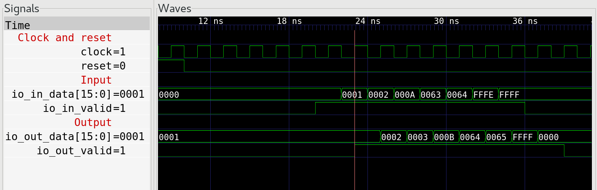

Introduction
Chisel is a modern take on Hardware Description Languages, such as (System)Verilog and VHDL. Both Verilog and VHDL were conceived in 80s, and are currently still the main two options when it comes to describing hardware. From the Developer Experience point-of-view, I would say that both languages are kind of OK once one gets used to them.
Short comparison to VHDL and Verilog
Obviously there are still areas where this two languages could be improved. That is why I have started to experiment with Chisel in my free time. The modules written in Chisel are shorter and thus more readable.
Verbosity
Having one implicit clock domain is (in most cases) great, and everything is then clocked from this clock. This saves a lot of typing compared to the Verilog:
always @(posedge clk) begin: proc_smth
if reset begin
// reset logic
end else begin
// here comes the real useful stuff
end
end
and VHDL:
proc_smth: process (clk)
begin
if rising_edge(clk) then
if reset = '1' then
-- reset logic
else
-- here comes the real useful stuff
end if;
end if;
end process;
I would argue that half of the lines in a typical VHDL modules are not needed, as demonstrated in previous example. A typical module for me would be some DSP or protocol processing module, operating in a single clock domain. For special cases, where precise control of clocks is needed, such as in ADC interface with ISERDES, one can still write the "sensitive" parts in classic HDL.
Development tools
Other advantage of Chisel is: one can use IntelliJ IDEA Community Edition to write code. Compared even to the best VHDL/Verilog IDEs, e.g. Sigasi, IntelliJ is light-years ahead when it comes to refactoring, autocompletion, integration with Git and countless little helpers.
Testing
Chisel is based on Scala, and for hardware generation and testing this is a
significant advantage. Chisel provides ChiselFlatSpec which is based on
FlatSpec and allows declaring specifications (in style of "Module" should "do
something") which are then evaluated.
One area where Chisel is seriously lacking compared to VHDL and Verilog are the implementation of the testbenches (or testers in Chisel-speak). In Verilog and VHDL one can write testbench in a same language with the same constructs as "Device" Under Test. In Chisel, synthesizable logic is written in Chisel, while testbenches are written in Scala.
Better testbenches
If we cannot write the testbenches in same language as logic, let's explore
other options. Chisel itself provides multiple
testers, such as
PeekPokeTester, SteppedHWIOTester and OrderedDecoupledHWIOTester. In my
opinion, OrderedDecoupledHWIOTester and SteppedHWIOTester are only suitable
for very small modules, and do not provide enough features to sufficiently test
a DSP module with AXI4-Stream input, AXI4-Stream output and AXI4-Lite slave
port for configuration.
PeekPokeTester allows poke-ing the inputs to DUT and peek-ing the outputs
from DUT. It also provides a step() method to advance simulation time by one
or more clock period.
In the previously-described case with a DUT with three ports (two AXI4-Stream
and one AXI4-Lite) one would ideally need three separate Bus Functional Models
(BFMs) which get executed (read their inputs and update their outputs) every
clock cycle. This can be achieved by overriding the step() method of the
PeekPokeTester.
Overriding step() method
The code for this example is available on my GitHub, in chisel-stuff/example-1.
In this simplified (stripped to the minimum) example, we have a DUT with two
interfaces. Each interface consist only of data and valid signals, neither
DUT nor monitor BFM are unable to backpressure the stream of data. The testbench
will consist of three logical units: DUT, Driver BFM and Monitor BFM. Both BFMs
are updated every clock cycles, so that driver BFM can drive the input port of
the DUT and monitor BFM can in parallel monitor the output port of the DUT.
The core of this examples are the following couple of lines (from OverrideStepExampleTester.scala:126):
//==========================================================================
// step
val rm = runtimeMirror(getClass.getClassLoader)
val im = rm.reflect(this)
val members = im.symbol.typeSignature.members
def bfms = members.filter(_.typeSignature <:< typeOf[ChiselBfm])
def stepSingle(): Unit = {
for (bfm <- bfms) {
im.reflectField(bfm.asTerm).get.asInstanceOf[ChiselBfm].update(t)
}
super.step(1)
}
override def step(n: Int): Unit = {
for(_ <- 0 until n) {
stepSingle
}
}
Through Scala's Reflection API
we are able to find all instances of classes which have a trait of ChiselBfm,
and then call their update() methods. This allows both BFMs to read and write
to the ports as they desire, independent from each other.
The instantiations of both BFMs is a little clunky, we need to manually provide
them all the methods from PeekPokeTester which are needed during the
operation of the BFMs.
Running sbt test in example-1-override-step, we obtain the following result:
[info] [0.002] SEED 1539634207505
[info] [0.023] 0 Test starting...
[info] [0.271] 5 Driver: sent 0
[info] [0.274] 6 Driver: sent 1
[info] [0.278] 7 Monitor: received 1
[info] [0.278] 7 Driver: sent 2
[info] [0.289] 8 Monitor: received 2
[info] [0.290] 8 Driver: sent 10
[info] [0.310] 9 Monitor: received 3
[info] [0.310] 9 Driver: sent 99
[info] [0.314] 10 Monitor: received 11
[info] [0.315] 10 Driver: sent 100
[info] [0.324] 11 Monitor: received 100
[info] [0.326] 11 Driver: sent 65534
[info] [0.340] 12 Monitor: received 101
[info] [0.340] 12 Driver: sent 65535
[info] [0.344] 13 Monitor: received 65535
[info] [0.348] 14 Monitor: received 0
[info] [0.401] 23 Test finished.
Enabling waves..
Exit Code: 0
[info] [0.409] RAN 23 CYCLES PASSED
[info] OverrideStepExampleTest:
[info] pipeline tester
[info] - should compare expected and obtained response
And this is the display of the waveforms from GTKWave:

It can be noted that both Driver and Monitor are able to perform their tasks in parallel.
Conclusion
Shown here is a convenient method to enhance the Chisel PeekPokeTester. In
this particular case (when DUT has only one input and one output port), one
could also use OrderedDecoupledHWIOTester, but it should be obvious that the
method presented here provides more control and flexibility in more complex
cases.